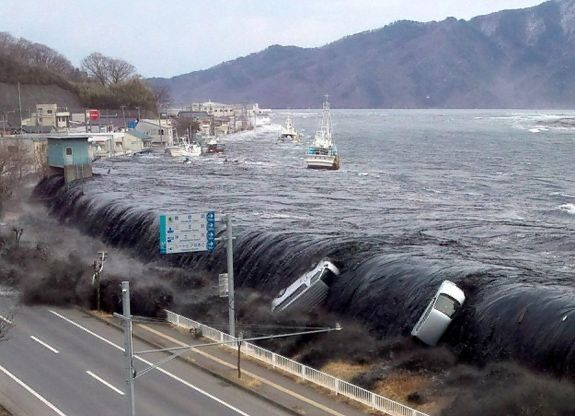

Earthquake in Pacific Ocean, east of Japan
Occurred on 11 March 2011 at 14:46 JST in the Pacific Ocean, around 72km
east of Honshu's Oshika Peninsula in the Tohoku region. The earthquake
lasted for about six minutes and struck at a depth of ~29 - 32 km.
Registered as a powerful magnitude 9.0~9.1 megathrust earthquake - the
strongest ever recorded in Japan, and the fourth-largest globally since
1900. Occurred along the subduction zone between the Pacific Plate and
Okhotsk (or Eurasian) microplate, within the Japan Trench.
Key Facts About the Earthquake
- Date: March 11, 2011
- Time: 14:46 JST (05:46 UTC)
- Magnitude: 9.0-9.1 (4th largest recorded)
- Epicenter: 72 km east of Oshika Peninsula
- Depth: 29 km (18 miles)
- Duration: Approximately 6 minutes
- Fault Length: 500 km (310 miles)
Tsunami Details
-
Generated massive tsunami waves up to 40.5 meters (133 feet) high
- Waves reached shore within minutes of the earthquake
- Tsunami traveled across the Pacific Ocean
- Maximum wave height of 40.5 m in Miyako, Iwate Prefecture
- Inundation area up to 10 km (6.2 miles) inland
Human Impact and Damage
- 15,899 confirmed deaths
- 2,526 people missing
- 6,157 injured
- 121,776 buildings completely destroyed
- 1,084,567 buildings partially damaged
- Estimated $360 billion in economic damage